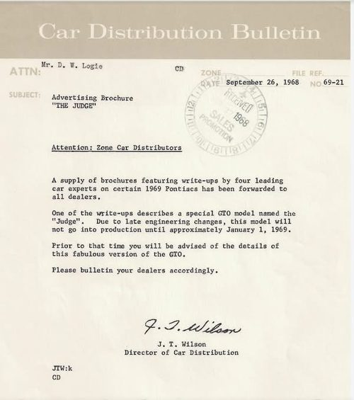
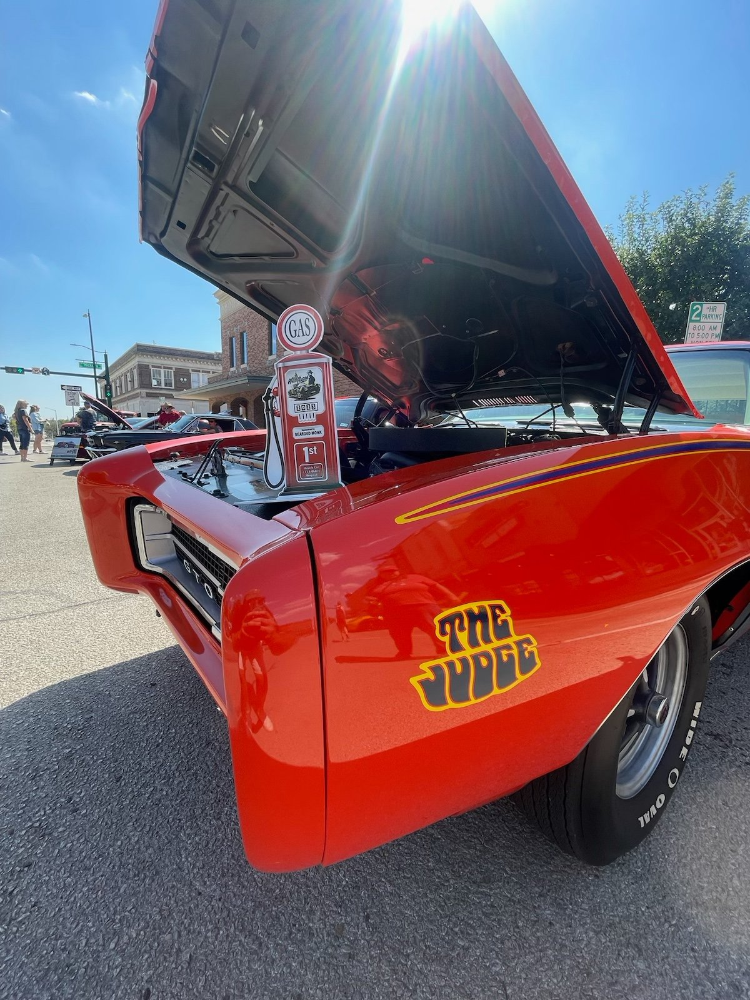
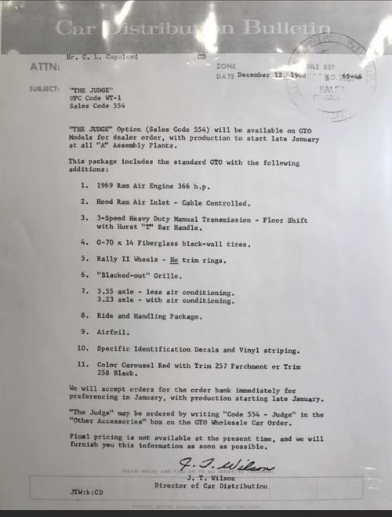
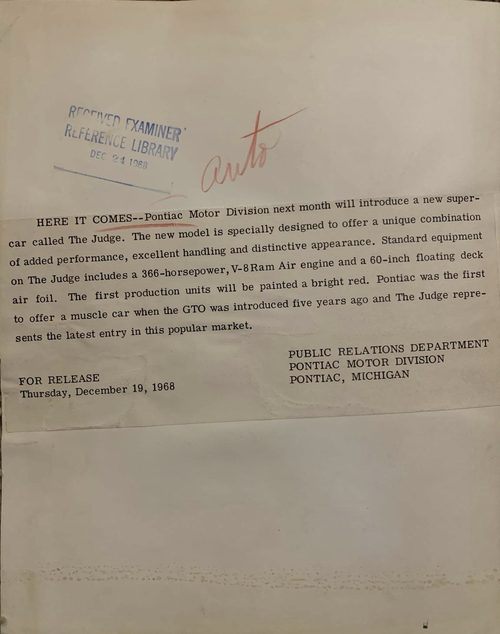
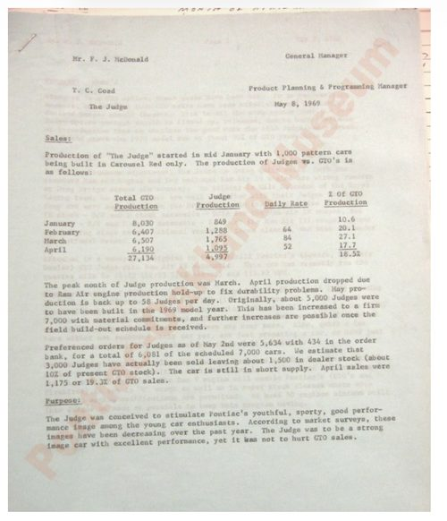

Record dated September 26, 1968
Advertising before production
Car Distribution Bulletin 69-21, J. T. Wilson. Held copy describes a planned approximately January 1 start after late engineering changes.
A researcher’s history · Al Diaz
A long-running Pontiac conversation. A personal question. A trail of records worth opening.

My research grows out of a Pontiac community that has compared cars, paperwork and recollections for decades. I remember its roots as a BBS going back to 1991. That beginning still needs independent confirmation. What we can open today is a Performance Years Pontiac Bulletin Board captured on April 3, 1997—a place to “give and get info” about Pontiacs, with sections for codes, specifications and assembly questions. [1]
That is evidence of a board existing by 1997, not its founding date. It is Performance Years, not proof of Classical Pontiac’s origins. The community’s history is older than any one surviving thread.
In December 2005, “The first 2000 Judges” was already a lively discussion of pattern equipment, short dealer order numbers and zone orders. Later contributors distinguished a dealer-invoice date from a car’s original movement out of its assembly plant. These discussions compared exceptions, corrected readings and supplied questions worth pursuing. [2]
The September 2015 thread “Early Production Judge ?????” brought the early Framingham car later identified by me as mine into that conversation. Contributors debated its 01B tag, the order-number box and what “first” could mean. [3]
On September 21, Mike Noun wrote:
“Recently I found some internal documents at the Pontiac Museum, and asked Tim Dye if it was ok to discuss here.”
He reported that internal memos described 1,000 Carousel Red pattern cars. On September 22 he added: “I cleared this with Tim, and he said this one was ok to post.” Those are his recorded discovery and permission statements—not a substitute for the documents themselves. [3]
Noun’s October 2016 Smoke Signals article explicitly described Pontiac ordering the first 1,000 Judges and delivering them to Pontiac Zone Lots around the country. Its page 13 invoice caption highlighted DON 00077. I did not invent either the pattern-car concept or the zone-distribution explanation. Giving that earlier work its proper place makes this history stronger. [4]
On May 18, 2019, posting as aldiaz1959, I identified myself as the current owner of the car that began the 2015 thread. I said I would repost its build sheet and PHS and add the cowl tag. Then I asked:
What does “BY-PASS CODE 2” mean?
It was a specific question about a specific piece of paper. That post records my question, not its answer. It also preserves my earlier confidence about the car’s place in production—a view readers should follow through the later corrections rather than take as a final verdict. [3]
The change was not discovering that documents matter. Earlier researchers already knew that. It was a more deliberate way of showing which record supports each claim, what kind of claim it is, and where the evidence stops.
The dated record shows that method becoming formal in October 2026; it does not identify a single day when my thinking changed.
The divergence is therefore one of method and presentation, not a claim that every earlier researcher shared one mistaken view. The forums themselves contain alternative explanations and revisions.
Framingham’s VIN plant letter G and Fremont’s Z belong to different plant histories. An invoice prefix beginning with Z is another field again. A shared DON does not, by itself, establish a nationwide production sequence. [5, 7]
For an individual car, the matching PHS invoice, broadcast sheet and cowl tag must be read together. A Pontiac program bulletin answers a different question. The four document copies below let readers inspect some of the paper behind the wider story.
There is more to find: the missing portion of the May 8 memo and the underlying June 12 and June 24 material. Unanswered requests do not settle what those records say.
The next useful page of evidence matters more than the last confident explanation.
This is a continuing investigation. Its value should lie in the records readers can inspect, the distinctions they can follow and the corrections they can see—not a claim to have invented the subject.
A separate clock · Pontiac Motor Division, 1968–1969
This is the period-document timeline, separate from the later forum and research chronology above. These are the dates printed on the records—not their later publication dates.
The September and December bulletins describe changing plans; they do not certify a specific car’s build date. Read the wider PMD document timeline →
Four actual held copies, already reproduced on the research website. Select “Enlarge full document” for an embedded larger view, or open its public copy.

Record dated September 26, 1968
Car Distribution Bulletin 69-21, J. T. Wilson. Held copy describes a planned approximately January 1 start after late engineering changes.

Record dated December 12, 1968
Car Distribution Bulletin 69-48, J. T. Wilson. Held copy lists code 554 / WT1, Carousel Red, trim 257 or 258 and a late-January start at all A assembly plants.

Record dated December 19, 1968
Photographed PMD release copy; Examiner Reference Library receipt stamp dated December 24, 1968. Acquisition source and chain of custody unconfirmed; not an authenticated original.

Record dated May 8, 1969
Held memo copy, page 1: T. C. Goad to F. J. McDonald, “The Judge.” Describes 1,000 Carousel Red pattern cars. Continuation not supplied here; no individual VIN identified.
Car-specific PHS, broadcast-sheet and cowl-tag evidence belongs alongside the matching VIN and plant. Those sensitive pages have not been added merely as decoration. No missing documents have been reconstructed.
AI assisted organization and drafting. This retrospective distinguishes verified source wording from the owner’s recollections and project rulings. No claim of exclusive discovery or a nationally first Judge is made here.